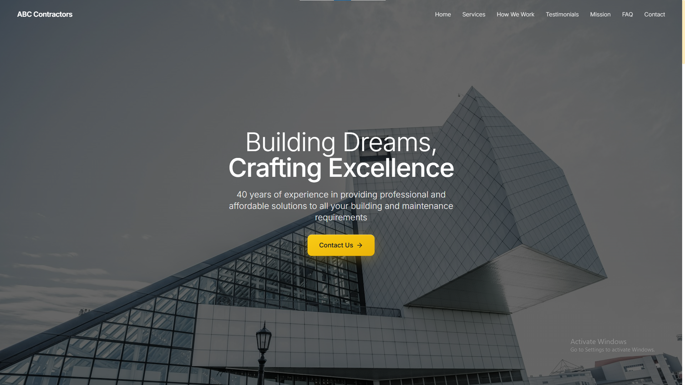

AI-Optimised Landing Page Case Study
Example study: How an AI-driven landing page increased conversions for a generic contractor landing page. No real company details – for demonstration only.

- AI-optimised layout for higher conversions
- Smart contact forms with instant validation
- Fast load times and mobile-first design
- Personalised content suggestions
- Continuous A/B testing and improvement